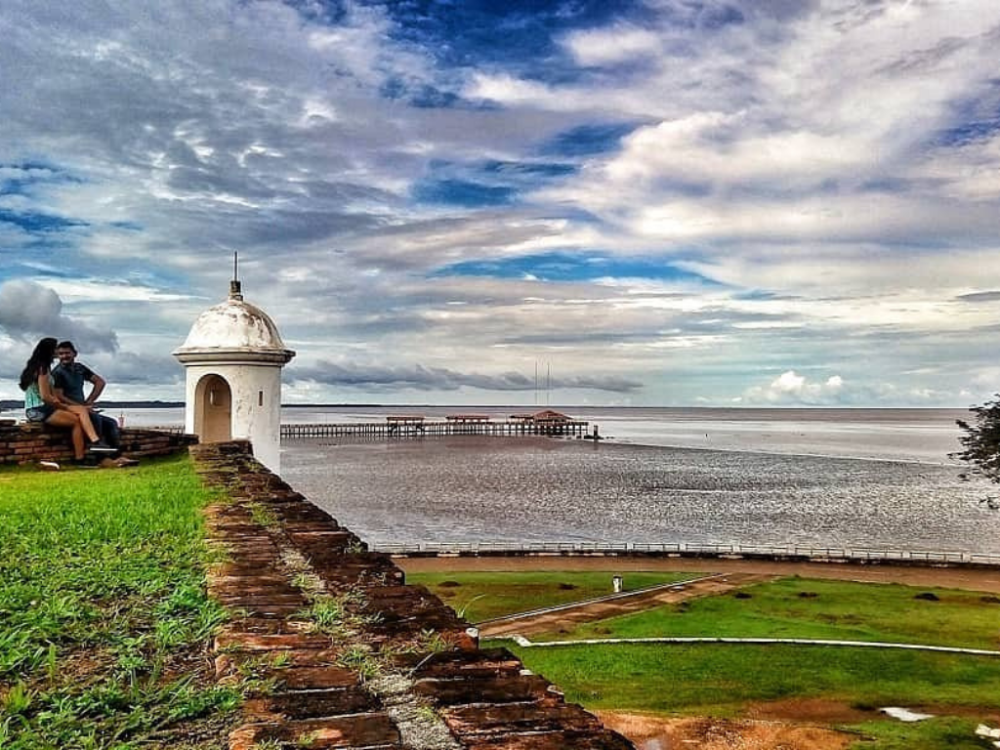

O Amapá, localizado no extremo norte do Brasil, é uma unidade federativa marcada pela intensa preservação ambiental, com mais de \(80\%\) de seu território coberto pela Floresta Amazônica. Com capital em Macapá – a única capital brasileira cortada pela Linha do Equador e situada à margem esquerda do Rio Amazonas – o estado destaca-se por sua posição estratégica e pela rica herança cultural, destacando-se o ritmo do Marabaixo. Geograficamente, é quase uma ilha, contornado pelos rios Oiapoque, Amazonas e Jari, e possui forte potencial para o ecoturismo e manejo sustentável, além de uma culinária singular que valoriza peixes, camarão regional e tucupi.
